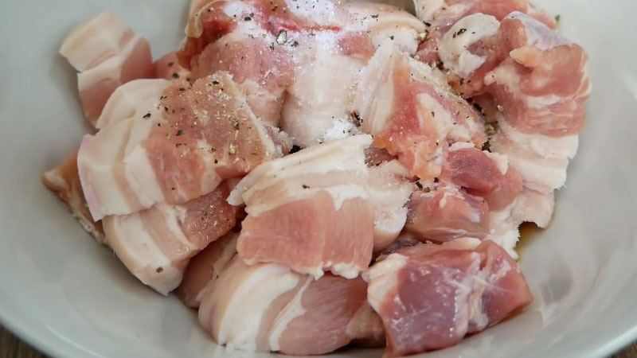
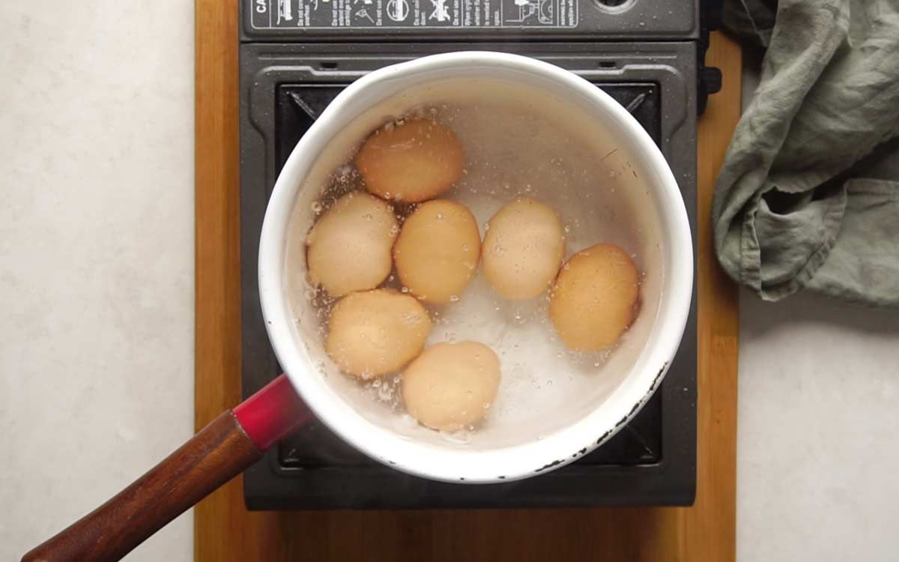
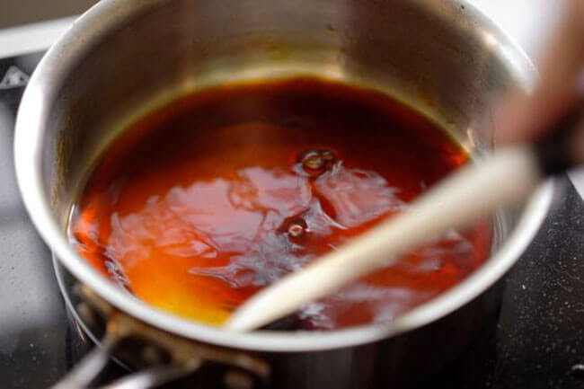
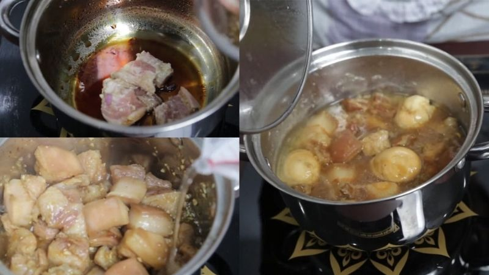
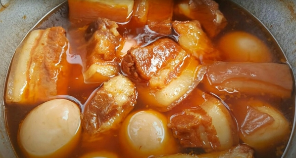
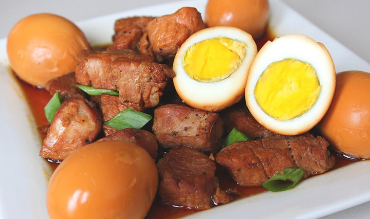
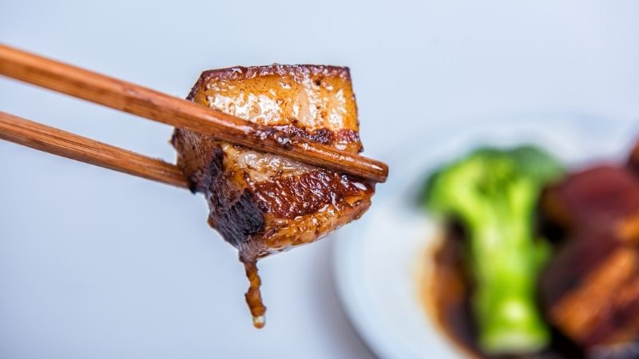
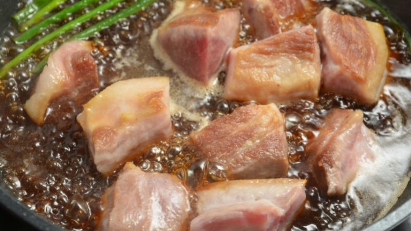

11/5/2020
thịt kho tàu
Thịt kho tàu, hay còn gọi là thịt kho hột vị, là một món ăn phổ biến tại miền Nam Việt Nam. Món ăn này đặc biệt thường được chế biến để dùng trong các ngày Tết Nguyên Đán vì có thể làm sẵn, giữ được lâu ngày, nên tiện khi dùng bữa thì dọn ra hâm nóng ăn ngay với cơm không phải bận công nấu nướng trong khi vui Tết.
Nguyên liệu
- Thịt heo 500g
- Trứng gà 5 quả
- Nước dừa 400ml
- Hành tím băm 1 muỗng canh
- Tỏi băm 1 muỗng canh
- Hành lá 1 nhánh
- Gia vị: nước mắm , đường, hạt nêm, tiêu hoặc dùng gói gia vị thịt kho tàu Knorr
Cách chế biến
Ướp thịt
Nên chọn loại thịt có da mỏng để món ăn ngon, mềm và không bị ngấy. Để thịt bớt mùi hôi, khi mua về bạn cần ngâm với nước muối loãng, sau đó rửa qua nước lã rồi thái.
Cho 500g thịt vào tô, lần lượt cho 1 thìa hành tím băm, 1 thìa tỏi băm, 3 thìa nước mắm, 2 thìa đường, 1/3 thìa hạt nêm và 1 thìa hạt tiêu vào trộn đều.
Sau đó, dùng màng bọc thực phẩm bọc kín bát thịt, ướp khoảng 15 - 20 phút.
Ướp thịt
Luộc trứng
Trong lúc đợi thịt thấm gia vị, bạn cho trứng vào nồi luộc. Để trứng đậm và dễ bóc, cho vào nồi luộc 1 ít muối hạt. Để nhiệt độ bếp ở mức vừa phải , không nên quá lớn trứng dễ bị vỡ vỏ. Sau khi nước sôi, hạ bớt nhiệt độ xuống, để sôi liu riu trong 7-8 phút là trứng chín tới.
Trứng luộc chín, để nguội rồi bóc vỏ, cho trứng vào bát riêng.
Luộc trứng
Làm nước màu
Cho đường vào nồi, nấu đến khi đường sôi chuyển màu cánh gián thì cho một lượng nước vừa đủ vào.
Không nên đun đường đến khi chuyển sang màu đen vì khi kho thịt sẽ bị đắng.
Làm nước màu
Kho thịt nước dừa tươi
Cho thịt đã ướp vào chảo, xào đến khi thịt săn lại thì đổ 400ml nước dừa vào.
Đậy nắp nồi, sau đó giảm lửa và đun thịt trong 30 phút.
Sau 30 phút, nước cạn đã vơi thì đổ thêm nước vào, và cho 5 quả trứng vịt lộn đã luộc chín vào, đậy vung đun thêm 30 phút nữa rồi tắt bếp.
Kho thịt nước dừa tươi
Thành phẩm
Cuối cùng, bạn tắt bếp và bày ra đĩa để ăn kèm với các món ăn khác. Khi thịt nguội hoàn toàn, có thể bảo quản trong tủ lạnh khoảng 2-3 ngày. Khi đến giờ ăn, bạn chỉ cần nấu thêm vài phút hoặc cho vào lò vi sóng. Bạn cũng có thể rắc hành lá lên trên nếu thích.
Thành phẩm
Thưởng thức
Món thịt kho tàu thơm ngon này đã sẵn sàng và có thể thưởng thức khi còn nóng. Món ăn này có màu nâu rất đẹp mắt và có hương vị rất hấp dẫn, đậm đà. Thịt heo hầm mềm, có trứng vịt lộn, có vị béo ngậy và rất ngon!
Món thịt kho tàu thơm ngon
Những lưu ý khi ướp thịt lợn kho tộ
Nếu có thời gian, bạn nên cho thịt đã ướp vào tủ lạnh qua đêm, hôm sau ăn sẽ ngon hơn.
Không đổ nước khi nước đường còn nóng, sẽ khiến hơi nước bốc lên gây bỏng. Bạn cũng nên theo dõi màu của nước đường bằng mắt thường để có độ dẻo trong khi đun tiếp để đạt được màu như ý thì dừng lại nhé.
Mẹo và lưu ý khi chế biến món thịt lợn kho tộ
Khi thịt nguội hoàn toàn, có thể bảo quản trong tủ lạnh khoảng 2-3 ngày. Khi đến giờ ăn, bạn chỉ cần nấu thêm vài phút hoặc cho vào lò vi sóng.
Để thịt mềm hơn, bạn có thể lót một miếng lá chuối lên trên miếng thịt. Lá chuối vừa giúp giữ nhiệt trong nồi vừa hút bọt trong quá trình kho.
Bên cạnh đó, trong quá trình kho thịt thì bạn cũng không nên đậy nắp lại, để nước thịt kho thành phẩm sẽ được trong và đẹp mắt hơn.
Giải đáp thắc mắc khi chế biến món thịt kho

Giải đáp thắc mắc khi chế biến món thịt kho
Có bao nhiêu calo trong thịt kho?
Theo nghiên cứu của các chuyên gia dinh dưỡng, 100g thịt kho tàu có chứa 166,6 calo, thành phần dinh dưỡng chính là chất béo.
Cơ thể bạn có thể dung nạp năng lượng từ thịt kho lên đến 440 calo trên 1 bát thịt kho với 300g thịt heo và trứng.
Thịt kho để được bao lâu?
Thời gian kho thịt kho tàu khoảng 1 tuần, vì nếu để lâu thịt kho sẽ không còn ngon.
Trứng cút lộn có thể thay thế thịt kho được không?
Món thịt kho trứng cút sẽ có một chút thay đổi để món ăn thêm phần hấp dẫn và ngon miệng.
Ăn gì với thịt kho để không bị ngán?
Thịt kho ăn cùng với cơm trắng sẽ là sự lựa chọn đã quá quen thuộc với chúng ta. Nếu bạn muốn ăn thịt kho bớt ngán hãy dùng chung với đồ chua, vị béo của thịt quyện chung với đồ chua vừa giòn vừa chua ngọt chống ngán hiệu quả. Ngoài ra, ăn kèm với rau sống sẽ khiến món ăn thêm phần hấp dẫn, loại bỏ được vị béo của thịt kho, giúp Tết thêm vui với những món ngon.
Vậy là chỉ với vài bí quyết đơn giản bạn đã có ngay nồi thịt kho tàu cực ngon, đảm bảo đã ăn 1 lần sẽ nhớ mãi không quên!

3 comments

6 likes